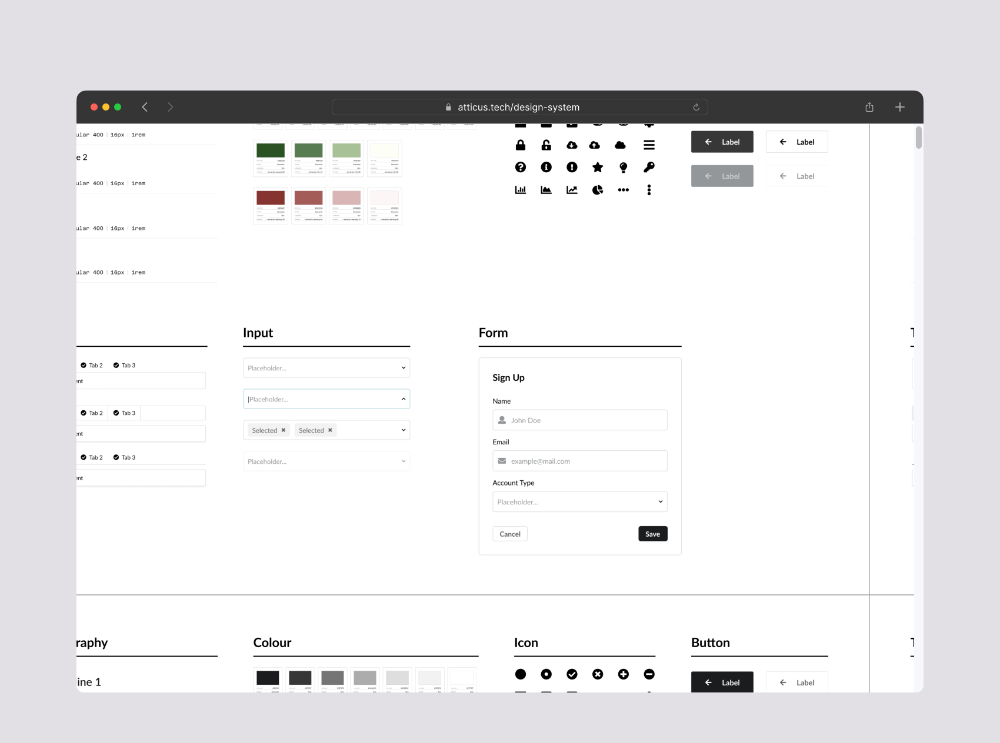
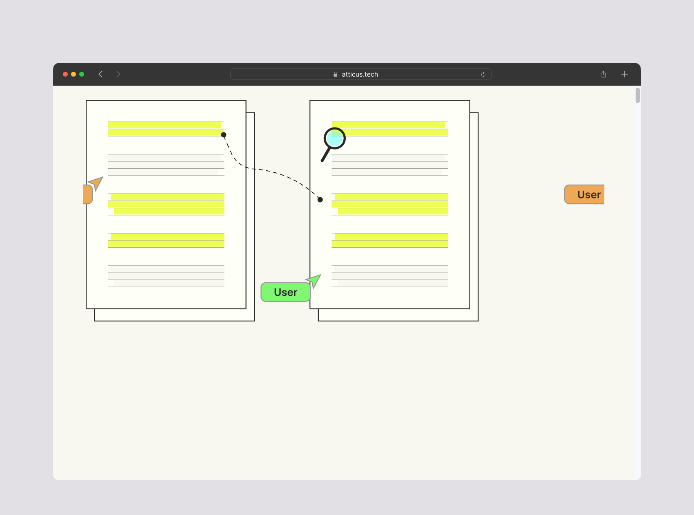
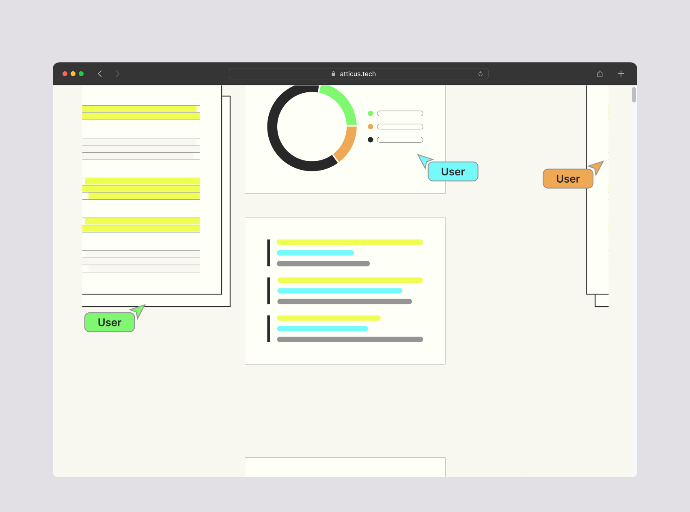

Recent Work
Atticus Design System
A comprehensive Figma library derived from Semantic UI and Atticus custom components forms a powerful yet simple design system. Guided by the Atomic Design methodology, it structures and organises everything from colours to typography and components to usage guidelines. The Atticus design system acts as a unified language between the design and engineering teams, ensuring visual consistency across features whether they use a default Semantic UI component or a customised version.
Full Text Search
Full text search was a significant update to Atticus, allowing users to search for content across hundreds of documents when trying find contextual evidence during document reviews. The search feature addressed a previous limitation of only being able to search for document titles. The designs of full text search received positive feedback from customers and internal stakeholders alike, and the design components and patterns defined for this project are in use across multiple other updates to the platform.
Document Review Workflow
I led the end-to-end design of a collaborative statement sign-off feature to address an initial limitation of the previous single-person approval setup. As the only designer allocated to this six-month-long project, I navigated various responsibilities to ensure the integration of this update with a suite of related product changes. The result is a tiered document review system that empowers multiple people to review and approve statements while providing a timely progress overview of the document review process.
Mathspace Waypoints

Mathspace Waypoints is a continuous assessment tool designed to identify gaps in understanding in mathematics and foster a growth mindset. During the beta launch, I worked closely with the product team, conducting usability tests, field studies and data analysis to refine the tool effectiveness and user engagement. Leveraging my close relationships with customers, I helped the product team make informed decisions regarding the direction for future updates, ensuring ongoing improvement and alignment with user needs.